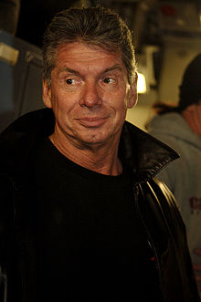

McMahon was born in Pinehurst, North Carolina. He was raised as Vinnie Lupton
and spent the majority of his childhood living with his mother, Victoria 'Vicki'
Lupton and a string of stepfathers. He claimed that one of his stepfathers, Leo
Lupton, used to beat his mother and attacked McMahon when he tried to protect
her.He said, "It is unfortunate that he died before I could kill him. I would
have enjoyed that." His biological father Vincent James McMahon, had left the
family while McMahon was still a baby, taking his elder son, Rod, with him.
McMahon did not meet his biological father until age 12.According to an
interview with Playboy, he attended Fishburne Military School in Waynesboro,
Virginia, graduating in 1964. In his early life, he also overcame dyslexia.
McMahon first met the promoter for Capitol Wrestling Corporation, his father
Vincent J. McMahon, at the age of 12. At that point, McMahon became interested
in following his father's professional wrestling footsteps and often accompanied
him on trips to Madison Square Garden. McMahon wanted to be a wrestler, but his
father would not let him, explaining that promoters did not appear on the show
and should stay apart from their wrestlers.
In 1968, McMahon graduated from East Carolina University with a business degree
and after a nondescript career as a traveling salesman, he was eager to assume a
managerial role in his father’s World Wide Wrestling Federation promotion
(although the elder McMahon was not thrilled with the idea of his son entering
the business). In 1969, McMahon made his debut as an in-ring announcer for the
WWWF's All-Star Wrestling. In 1971, he was assigned to a small territory in
Maine, where he promoted his first card. He later became the play-by-play
commentator for television matches after he replaced Ray Morgan in 1971, a role
he regularly maintained until November 1997.
Throughout the 1970s, McMahon became the prominent force in his father's company
and, over the next decade, assisted his father in tripling TV syndication. He
pushed for the renaming of the company to the World Wrestling Federation (WWF).
The younger McMahon was also behind the Muhammad Ali versus Antonio Inoki match
of 1976.In 1979, the younger McMahon and his wife Linda founded their own
company, Titan Sports, which was incorporated in the following year and in 1982
- when McMahon was aged 37 - acquired control of the Capitol Wrestling Co. from
his ailing father (who died in May 1984).
On February 21, 1980, McMahon officially founded Titan Sports, and the company's
headquarters were established in South Yarmouth, Massachusetts, using the now
defunct Cape Cod Coliseum as a home base for the company At the time of his
purchase of the WWF, professional wrestling was a business run by regional
promotions. The various promoters shared an understanding that they would not
invade each other’s territories, as this practice had gone on undeterred for
decades; McMahon had a different vision of what the industry could become. In
1983, the WWF split from the National Wrestling Alliance a second time, after
initially splitting from them in 1963 before rejoining them in 1971. The NWA was
the governing body for all the regional territories across the country and as
far away as Japan.
He began expanding the company nationally by promoting in areas outside of the
company's Northeast U.S. stomping grounds and by signing talent from other
companies, such as the American Wrestling Association (AWA). In 1984, he
recruited Hulk Hogan to be the WWF’s charismatic new megastar, and the two
quickly drew the ire of industry peers as the promotion began traveling and
broadcasting into rival territories.
Nevertheless, McMahon (who still also
fronted as the WWF’s squeaky clean babyface announcer) created The Rock 'n'
Wrestling Connection by incorporating pop music stars into wrestling storylines.
As a result, the WWF was able to expand its fanbase into a national mainstream
audience as the promotion was featured heavily on MTV programming. On March 31,
1985, he ran the first WrestleMania at Madison Square Garden, available on
closed circuit television in various markets throughout the U.S.
During the late 1980s, McMahon shaped the WWF into a unique sports entertainment
brand that reached out to family audiences while attracting fans who had never
before paid attention to pro wrestling.
By directing his storylines towards
highly publicized supercards, McMahon capitalized on a fledgling revenue stream
by promoting these events live on PPV television. In 1987, the WWF reportedly
drew 93,173 fans to the Pontiac Silverdome (which was called the "biggest crowd
in sports entertainment history") for WrestleMania III, which featured the main
event of Hulk Hogan versus André the Giant.